约塞米蒂
条评论要是能做一棵树就好了！
Yosemite在印第安语里有「灰熊」的意思,也就是加州州旗上的灰熊。在网上也刷到不少遇到熊的视频，慌于没有经验。于是在出发之前在网上四处查了查遇到熊该怎么办云云……实际上只在往园外开的时候看到一只灵活过马路的小熊 -_-||
除此之外还有一些需要提前考虑的：
🛜 🚗｜进入园区的山路是是完全sos，一定要提前下载好离线地图；加好油；随时check官网路况提醒，如果有泥石流/塌方好随时重新规划线路；预留足够时间，园区内外经常修路，给计划留些buffer。
⛰️Trail｜如果只是随便走走trial 完全可以穿溯溪凉鞋，也不用背很大的登山包。高强度登山人还是得提前准备好登山鞋，登山杖等等……这部分内容等我抽中了才有发言权 😅
🦟 Mosquito｜步行Trail的时候被蚊子攻击了，即使五天过去，蚊子胞还是红肿的。有被朋友种草Muhi「无比滴」，抹了后立马就不痒了诶！
🌞 Sun protection｜加州的太阳实在是不敢小觑，在Irvine海边走走就晒红了。出发之前在target购入Neutrogena的「beach defense」防晒喷雾，没有晒伤哦。帽子和墨镜必不可少。
🥪 Foods｜出发前在Target买了一些速食和能量棒。Cashews, Cherries and Almond with Cocoa Drizzle Fruit and Nut Bars - Good & Gather 按头安利（bushi）图省事需要提前买好瓶装水，也可以带着超大桶矿泉水来园区fulfill。
🚲 Bike | 在路上就看到很多人给车尾/车顶装了自行车架，去了才知道即使为了不堵车很早入园（10点之前），在里面也不一定能一直有合适的车位。所以最好把车固定停到一个位置后再骑车去每个 point 比较好。Lodge 和Curry Village有 bike rental，园区内也有2-hour-free bike（需要下载Yosemite Bike Sharing），当然肯定还是自己带自行车玩得比较开心。
🍔 Supplements｜Yosemite Store 基本可以满足hiking的所有需求，并且没有景区溢价。straberry&cherries 新鲜且甜（会有人懂吗…在这里真的很难吃到不酸的草莓），冰牛奶也好喝！所以不用因为担心没有好吃的食物提前买太多速食。Store lodge还有一家小餐厅，主要卖一些汉堡三明治，味道不错的，一定要尝尝他们家的小牛奶！（但不要选 chocolate milk，添加剂受不了一点。）
📓 Souvenir｜Yosemite Store有卖一些纪念品，但是总体来说比较工业化，美感不足价格略高。Visitor Center 有一家纪念品店，除了卖一些冰箱贴，postcard，还有Yosemite照片集，画作。挑了一些照片和一次性胶卷相机；还可以买一个本National Park Passport，里面有美国所有的国家公园介绍和用来记录的空白格，拿去visitor center盖戳！还买了一张邮票（手账人狂喜）
🏷️｜运气好可以看到熊，鹿，旱獭，臭鼬，山猫，狐狸和猫头鹰。我们只看到一只灵活的胖熊，在airbnb外吃草的鹿。对啦，不要把食物留在车里和餐桌上，真的会有熊过来哦。
这次总共在优胜美地呆了不足三天，因为是临时决定出行，没能定到园区里的住宿，最终选择住在稍微有点远（车程45-1h）的园区外面，从los angeles 开到住宿地约4个小时，到的时候已经是深夜。这个小区域有三个房子：蓝色，橙色，红色，我们住在橙门小屋。一开始差点走进红色小屋，朋友开玩笑说万一真进去就是shooting事件了。屋子里有wifi，电视，沙发，壁炉，大餐桌，2 king-size bedrooms，热水，厨房用品齐全，没有洗浴用品，房间干净安静，可住4人。地板上嘎吱嘎吱的声音提醒人这是间老房子。最喜欢坐在餐桌上吃饭打字，旁边就是小阳台。
Airbnb： Sky Ranch Cottages - Orange Door
- 入园时购买National Park Annual Pass比较省事
《优胜美地60年》里写道：「他们数月不交一分钱，算准时间卷起铺盖和公园警察捉迷藏，在帐篷口随地大小便，偷营地其他游客的培根嫁祸给黑熊，在餐厅角落里狼吞虎咽客人吃剩的早饭，怀抱一天只花一美元的生活哲学穷开心。」在meadow看到两个人拿望远镜对着远处的El Capitan，便猜想上面有人在攀岩。然而肉眼根本找不到移动的小点，前去打扰人家，用望远镜才看到。电影Free Solo就拍摄于此。
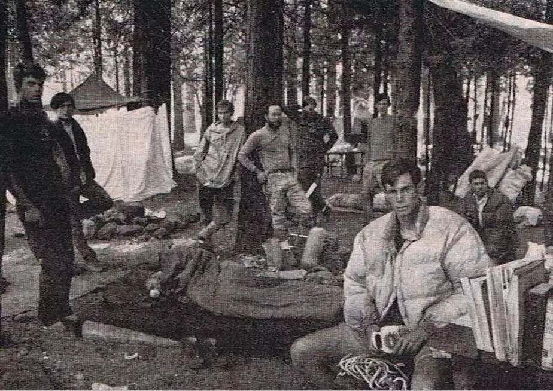

尽管第四营地的成员们很惹人讨厌，但正是在这段无忧无虑地日子里，他们构建了现代攀岩运动的根基与理念——建立公认的Y.D.S攀岩难度体系；研发腰式保护技术、动态保护技术；自制硬式岩锥与尼龙绳；开创反对使用膨胀螺钉破坏岩壁的“清洁攀登（Clean Climbing）理念。1964年，年轻的Yvon Chouinard在第四营地做起了生意，出售自制岩塞。正是在这里，他创立了Black Diamond的前身，并在随后开创了全球户外品牌Patagonia。图@Tom Frost如今，第四营地一直保持着先来先住、不能预约的传统。每日天刚亮营地口就有人排队等候空位，四季不绝。共享是Camp 4的特色，每片区域可容纳六顶帐篷，每顶至多六人。图@Harry Kikstra

以上引用文字及图片来自@大树(https://www.mafengwo.cn/u/36232998.html)
园区内有南向/北向单行道，提前规划好线路，不至于因为错过景点而走很多弯路。
Tunnel view
从South Entrance进入Yosemite，Tunnel View 是进入Valley之前看到的景点，坐在路边的石头护栏上静静看了好久…

El Capitan 酋长岩
世界上最大的单体花岗岩，据说目前最快纪录2-hour登顶。

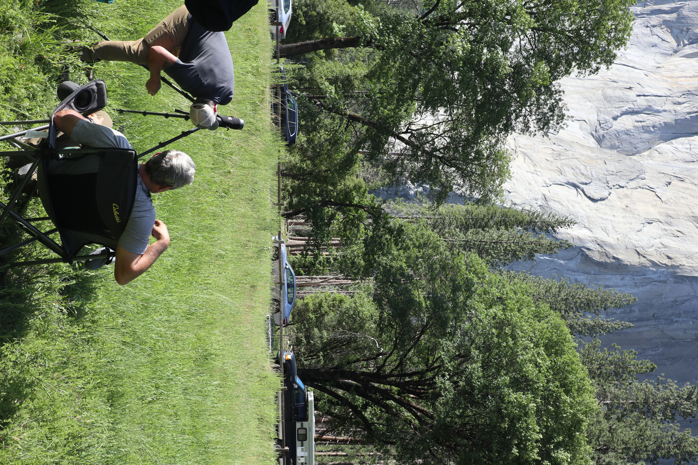
Bridalveil Fall 白纱瀑布
原名为Pohono，印第安语是＂風之灵＂的意思。今年水量很大，要穿防水外套哦，不然会直接冲凉。


Lower Yosemite falls
Lower Yosemite Falls Trail 真的就是散步，连徒步都不算，全长只有1.6千米。下次一定要试试Yosemite Falls Trail 到上瀑布。
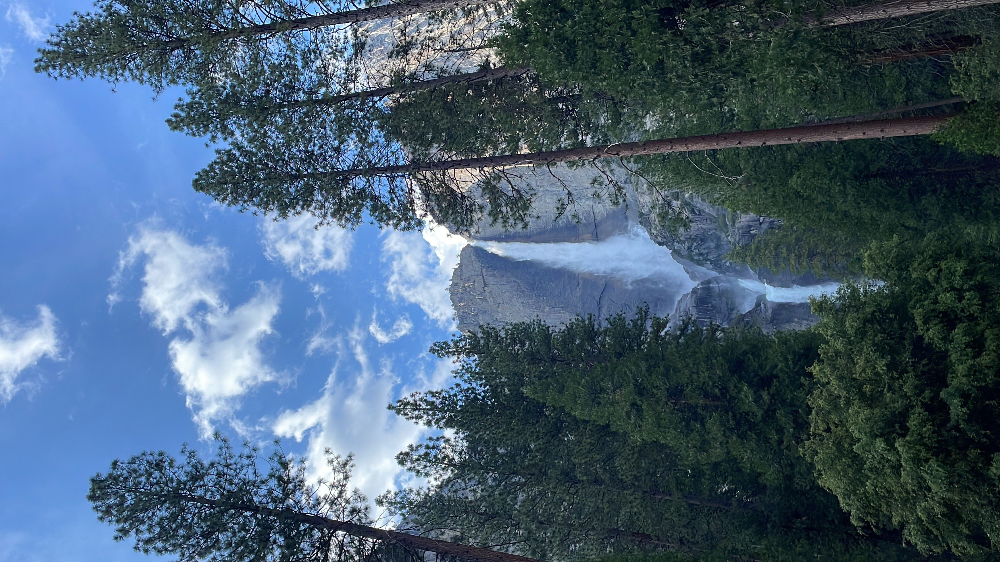


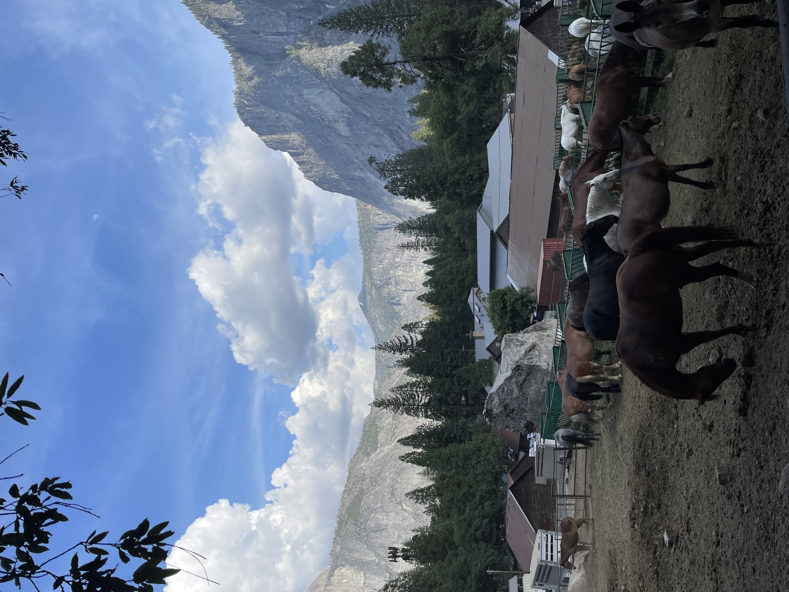
Half Dome
Trail 需要提前预约，据说登顶要花上10~12小时。我们这次没有选择去爬…
Vernal Falls&Nevada Falls
Mist Trail徒步路线不难但需要注意安全，有的地方路比较滑。
Valley View（根据日落提前计划下山时间）
可以拍到绝美橘红色夕阳
整体来说这次比较玩得比较随性休闲，但是对园区有了一个比较详细的了解，下次一会要好好爬山。
Sequoia & Kings Canyon National Parks
这里有世界上最大的树（General Sherman Tree）和美国本土最高峰（Whitney Mountain）距离Yosemite 车程在两个半小时。我们住在Visalia一个看起来装修很对口味的airbnb，实际也的确是干净漂亮的小屋，甚至拍了照片：

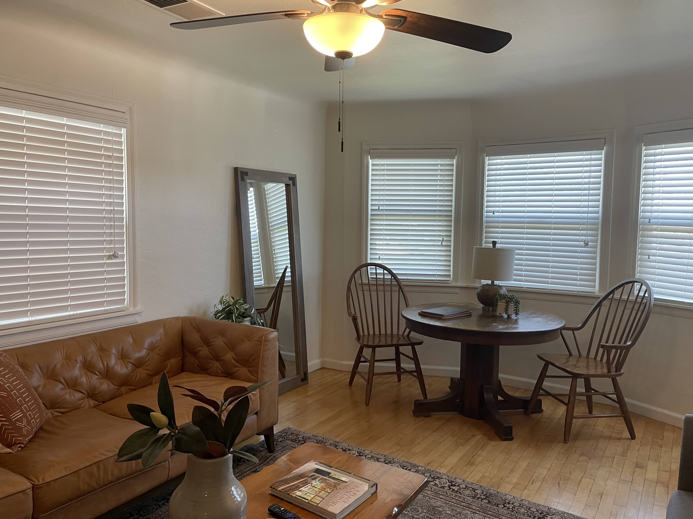

选择住在Visalia也是因为想从198公路直接去红山公园，但当天官网通知198因为泥石流封闭了部分路段，所以我们只能从fresno走180公路，经过国王峡谷到红山公园，所以如果下次再来，更倾向住在到两个公园都近的Fresno。安排半天的游玩时间就足够了。
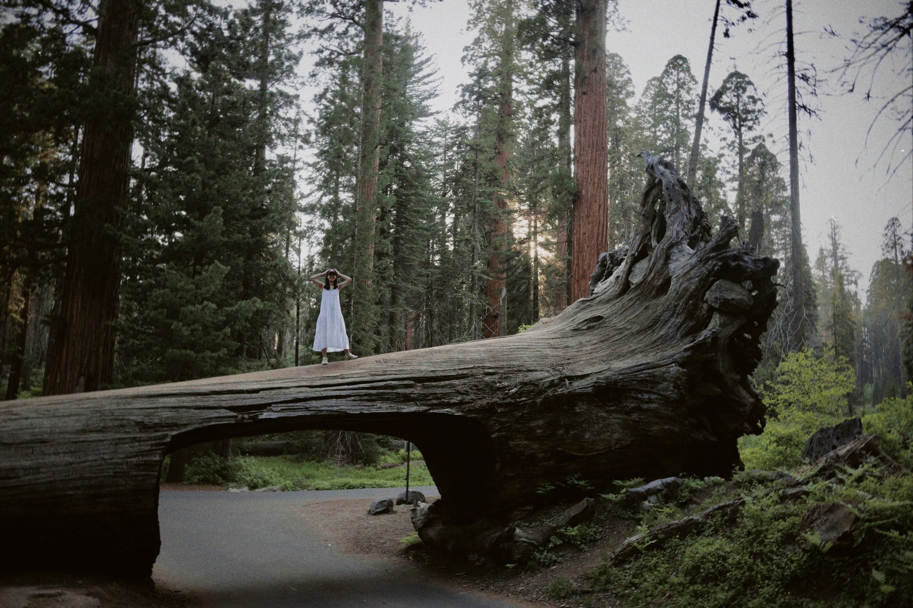
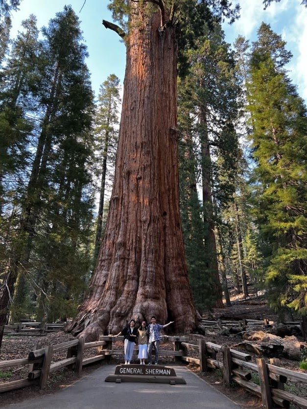
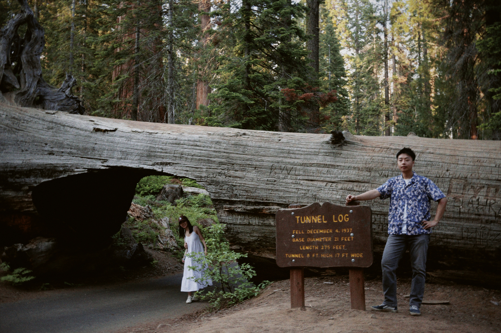


Jun.29
张爱玲故居 Room 206, 10911 Rochester Avenue, Westwood, LA


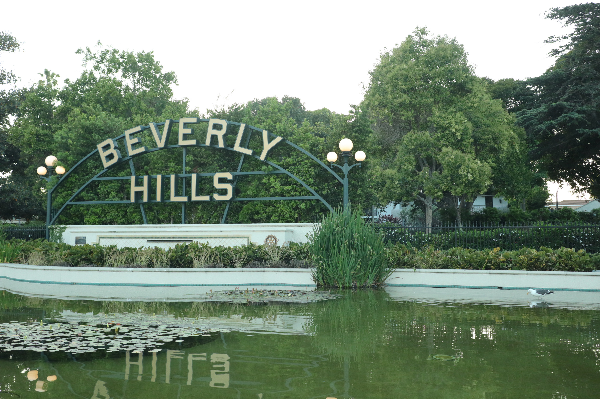

据说已经成了LA三俗之一，不过确实好吃！
Jun.30
Academy Museum of Motions
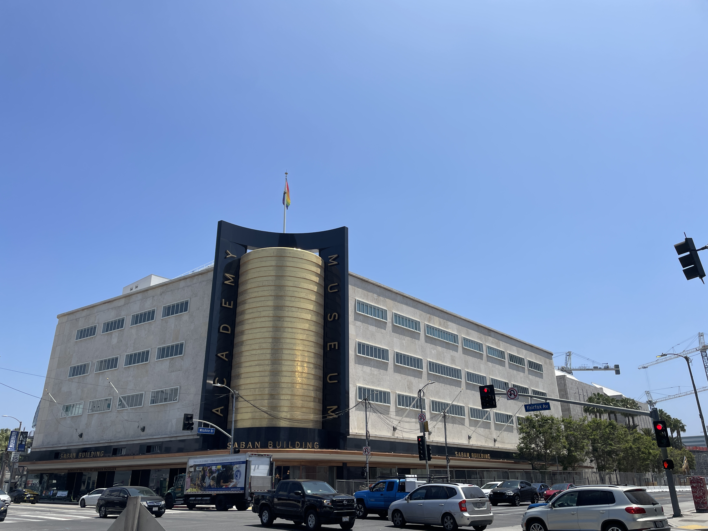
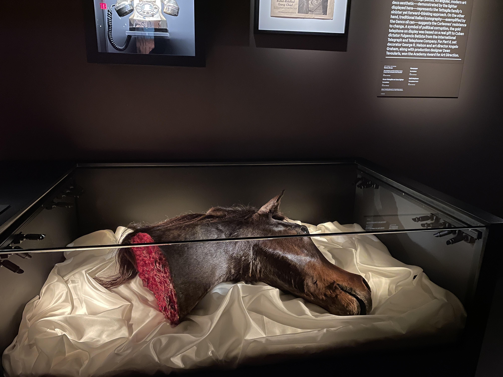
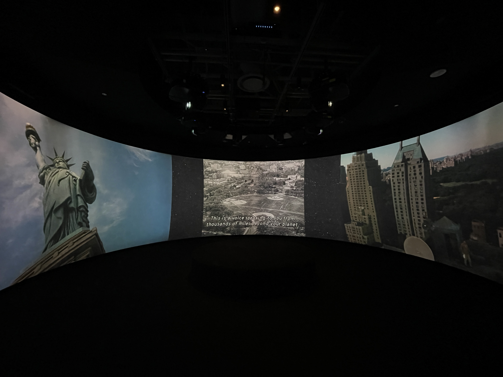
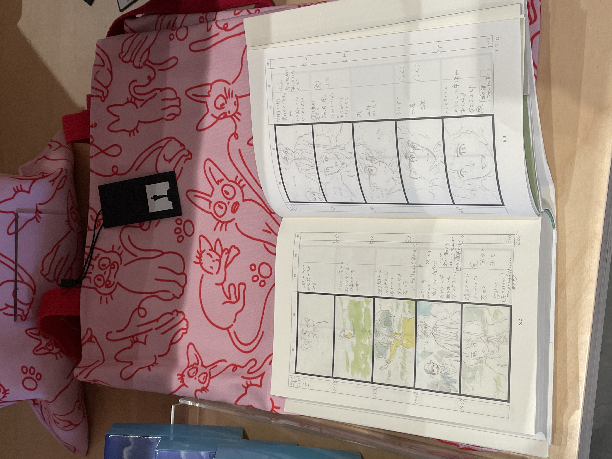
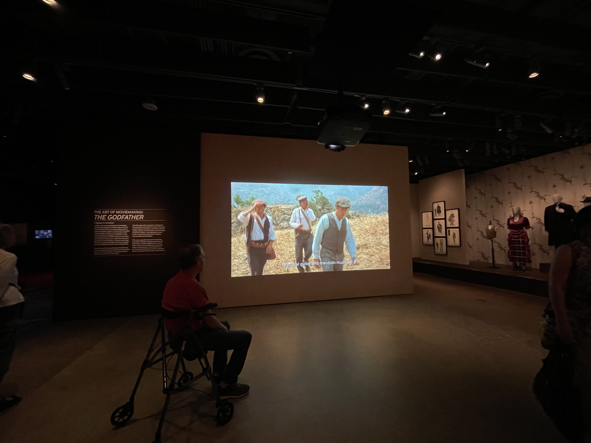


Long Beach
原本是要去看鲸鱼的，但是晚到了半小时最终错过了。每天12:00 pm 3:00pm各一趟，一定一定要提前看下导航过去要多久，洛杉矶堵车真的是…
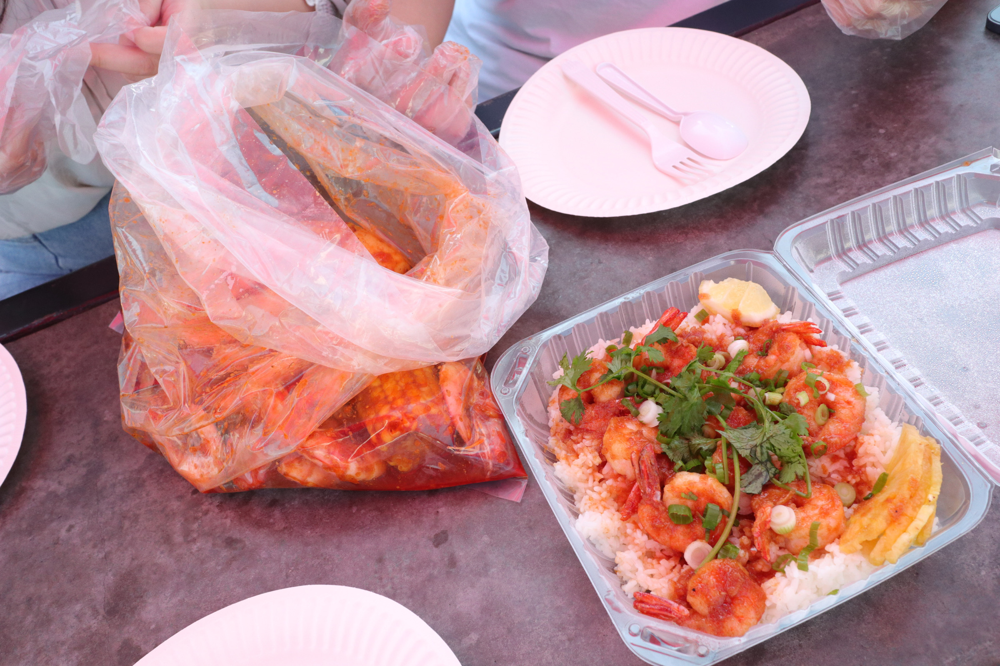


本文标题：约塞米蒂
文章作者：六趾猫
发布时间：2023-07-06
最后更新：2023-07-06
原始链接：http://marmeow.com/2023/07/06/Yosemite-0/
版权声明：本博客所有文章除特别声明外，均采用 CC BY-NC-SA 3.0 CN 许可协议。转载请注明出处！